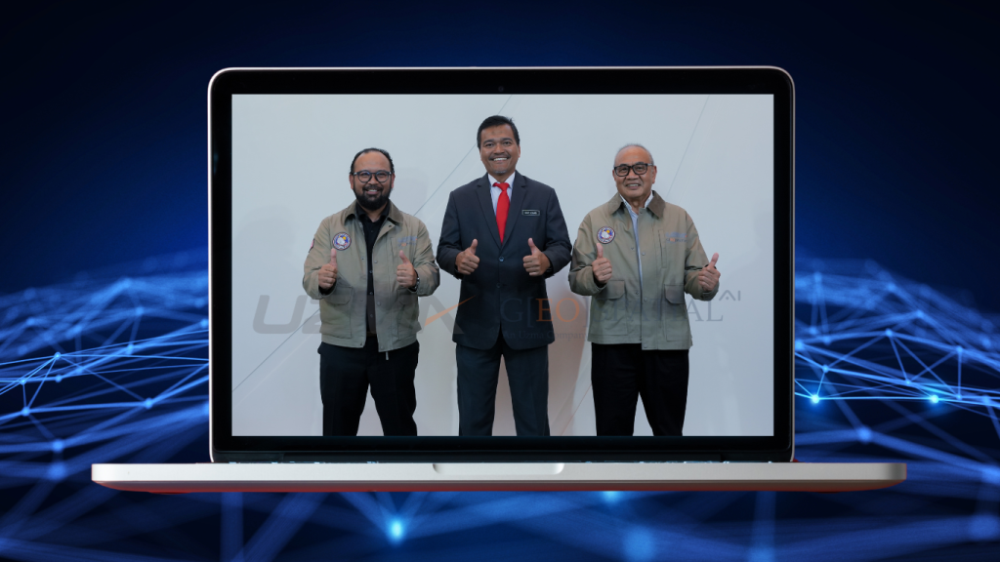
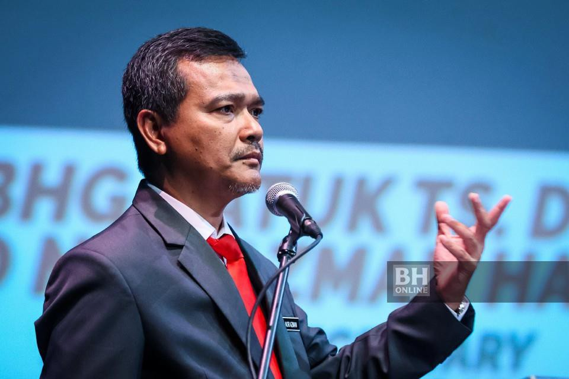

- Press Release, Programme
UzmaSAT-1 beri nilai tambah pembangunan satelit negara
- August 22, 2024
- By Media GeoAI
KUALA LUMPUR : Pelancaran UzmaSAT-1 disifatkan boleh memberikan nilai tambah terbaik kepada inisiatif kerajaan dalam pembangunan satelit negara, sejak satelit pemantau bumi pertama, Tiungsat-1 dilancarkan pada 2000.
Justeru, Timbalan Ketua Setiausaha (Pembangunan Teknologi) Kementerian Sains, Teknologi dan Inovasi (MOSTI), Datuk Dr Mohd Nor Azman Hassan, berkata kerajaan mengalu-alukan dan menyokong sebarang usaha serta langkah diambil pemain industri.
Mengambil contoh inisiaitif diambil Kumpulan Uzma, beliau berkata kerjasama antara kedua-dua pihak penting dalam usaha mencapai petunjuk prestasi utama (KPI) ditetapkan dalam Dasar Angkasa Negara 2030.

“Dengan situasi ekonomi semasa dan mengambil kira hakikat bahawa kos diperlukan untuk membangun, melancarkan dan mengoperasikan sebuah sateliti sangat tinggi, inisiatif ditonjolkan daripada pemain industri angkasa seperti ini adalah penting.
“Ia penting dalam pembangunan ekosistem angkasa dalam usaha mencapai matlamat iaitu menyasarkan Malaysia memiliki satelit sendiri di ruang angkasa.
“Dengan inisiatif ini, ia sekali gus dapat menyumbang kepada matlamat untuk menjadi sebuah negara berpendapatan tinggi,” katanya berucap di majlis pengenalan satelit UzmaSAT-1 di ibu pejabat Kumpulan Uzma di sini, hari ini.
Turut hadir Ketua Pengarah MYSA, Azlikamil Napiah dan Pengerusi Uzma Berhad, Datuk Abdullah Karim.
Mengulas lanjut, Mohd Nor berkata, MOSTI menerusi Agensi Angkasa Malaysia (MYSA) akan terus memberikan sokongan dan galakkan secara konsisten kepada semua pemegang taruh dalam bidang berkenaan.
Katanya sokongan daripada kerajaan penting khususnya kepada pemain industri berkenaan dalam mencapai matlamat kerajaan dalam membangunkan ekosistem industri angkasa yang utuh dan lestari.
“Kami berdedikasi dalam memastikan strategi dan inisiatif digariskan dalam Dasar Angkasa Negara 2030 dilaksanakan secara efektif yang mungkin, untuk memenuhi tanggungjawab ini.
“Pembabitan Malaysia dalam sektor angkasa jelas sekali strategi yang penting, terutama dalam penggunaan meluas internet kebendaan (IOT) dan mengambil kira kebimbangan terhadap kedualatan negara, keselamatan serta integriti data serta maklumat,” katanya.
Sumber: Berita Harian Online, BH Online | 13 Ogos 2024
Oleh Wartawan Fahmy A. Rosli
Related Posts
Looking for Answers to Your Industry Issues?
If you want us to share more about space technology, EUDR, EO satellite applications, and industry related, feel free to drop your contact and experience the technology yourself.